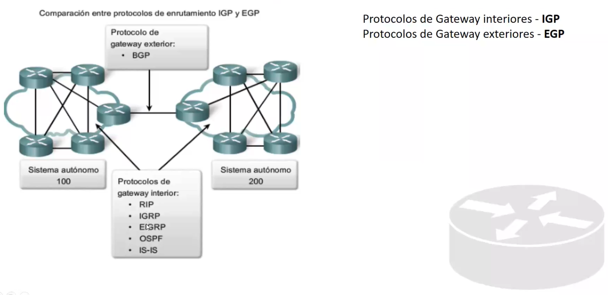

Sistema autonomos:

Vector distancia: Rip: El numero de saltos para llegar a un lugar y solo por el numero de saltos.
Cada x tiempo comparten informacion para actualizar cambios.
Protocolo estado de enlace: